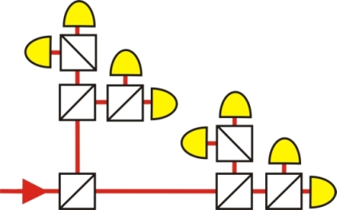
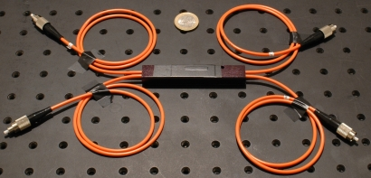
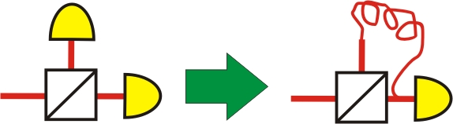

Photon statistics chapter 1:
Set-up of the experiment
In this chapter, the set-up of the experiment for measuring the photon statistics is introduced. The experiment is a good example of how a fundamental idea can be produced in a simplified way and at low costs with fibre-glass-integrated optical components.
Network of beam splitter cubes
With a single symmetric beam splitter cube, photon numbers can be resolved up to n=2. In order to resolve higher photon numbers, more than one beam splitter has to be used. In the sketched set-up in picture 1, there are eight different possibilities how a light pulse can split up. Ideally, with this set-up the photon number n=8 can be resolved. The disadvantage of the sketched experiment with beam splitter cubes is that it is a very large and expensive optical set-up. For the network, eight single photon detectors (cost: 5.000€ each) and seven beam splitter cubes (cost: 400 €) are required. The network, with all its mirrors and irides for exact adjustment, would also fill an entire optical table. In basic research it is important to find low priced and simple solutions. How can the experiment be realized at less costs and in a more simple way?

pic. 1: Network of symmetric beam splitters for resolving the photon number up to n=8
Realisation with glass-fiber cables
Every quantum optical experiment should, for everyday use, be developed in a way that it can work without a massive optical table. One possibility to avoid the open jet set-up shown in picture 1 is to connect the optical components with glass-fibre cables. On the whole, seven beam splitter cubes are needed (pic. 2). The beam splitter is placed in a small black box for this purpose. The two input and output ends of the beam splitter are connected via glass fibre cables. With these fibre-linked beam splitters and connecting plugs for the glass fibre cables, an optical table is no longer required. The complete optical set-up fits into a shoe box.

pic. 2: beam splitter fibre-integrated with two inputs (left)
and two outputs (right: reflected and transmitted)
The most expensive components in the experiment are the eight single photon detectors. Is it possible to do without single detectors? It is indeed - by varying the arrival time of the photons at the detector (pic. 3). With this trick, only four of the original eight detectors are needed. If a bright light pulse hits a beam splitter, it is transmitted or reflected at a likelihood of 50% each. The light pulse in the transmitted branch is immediately registered by the detector. The light pulse in the reflected branch of the fibre-integrated beam splitter has to run through a 20m long glass fibre cable (c=200.000.000m/s) first, before hitting the detector 100ns later than the transmitted light pulse. By taking into account the time difference between the sending through the laser and the detection of the light pulse, the signals of the single detector can be allocated to the transmitted or to the reflected branch. Is it possible to reduce even more in number the four existing detectors and the seven fibre-linked beam splitter cubes?

pic. 3: Two detectors at the beam splitter can be reduced to one detector by utilizing delay
Reducing the beam splitter network
The aim is to reduce the above network of beam splitters (pic. 1) to three fibre-linked beam splitters and two detectors. This is possible by a skilful combination of beam splitters and glass fibre cables in order to create delay. The set-up of such a network is explained with the animation below. With grey pushbuttons one proceeds to the next step. An explanation can be faded in. For testing the set-up, lasers and detectors for bright light are connected up to the glass fibre cables. The laser sends short light pulses, which are then registered by the detector. Data analysis of the detectors is carried out with the oscilloscope. A separate picture of the oscilloscope can be faded in. In the next chapter measurements are conducted with the completed beam splitter network.
To the next chapter: Measurement and analysis of the experiment [klick]
Back to overview [klick]
Autor: P. Bronner, Oktober 2008
Translation: G. Murphy